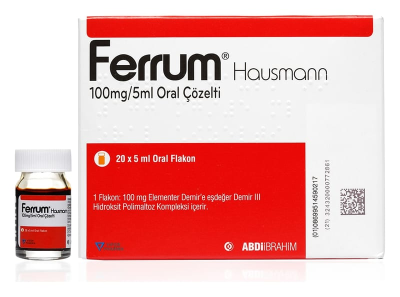

Ferrum Hausmann 100 mg/5 ml Oral Çözelti, 20 Adet

Ne için kullanılır
KT · Bölüm 1FERRUM HAUSMANN, demir III hidroksit polimaltoz kompleksi içeren ve ağızdan kullanılan bir çözeltidir. Her bir FERRUM HAUSMANN 100 mg/5 ml oral çözelti flakonu (5 ml), 100 mg elementer demire eşdeğer 357 mg demir III hidroksit polimaltoz kompleksi içerir.
FERRUM HAUSMANN her kutuda her biri bir içimlik (5 ml) 20 adet flakon içerir.
FERRUM HAUSMANN anemili veya anemisiz tüm demir eksikliği tedavisinde kullanılır.
Demir eksikliği tanısının uygun laboratuvar testleri ile doğrulanması gereklidir.